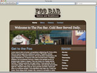

Red Lantern builds unique interface & user experiment welcome to the new Red Lantern design Red Lantern is a design studio that builds . We work with clients of all sizes, from startupsness objectives through effective design and development. view contact Our work 